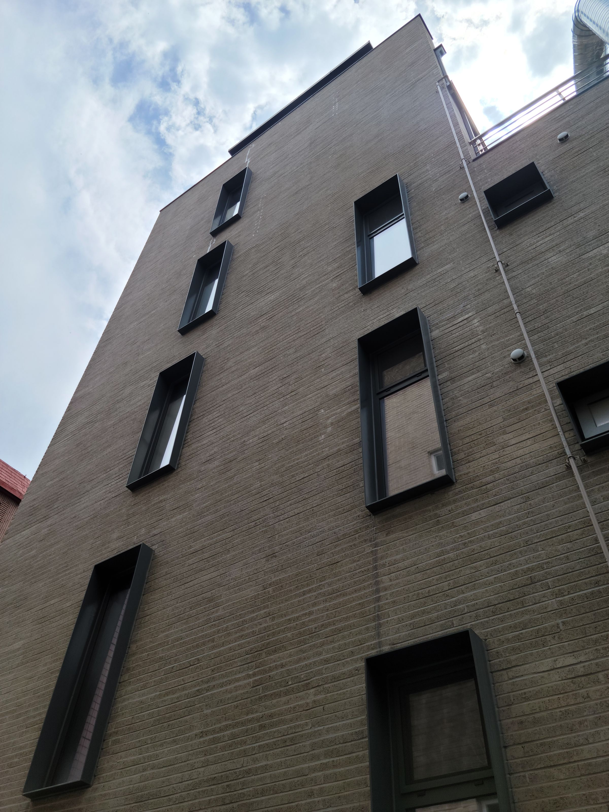
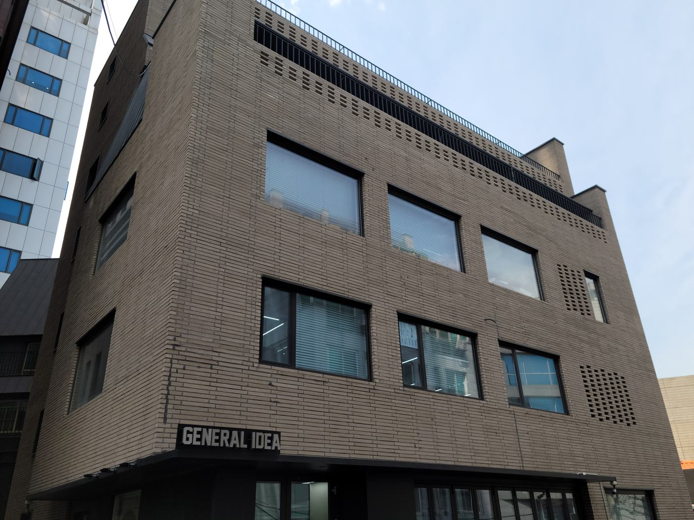

더올포엠은 와이드벽돌, 와이드타일, 디자인블록을 통해 콘크리트 외장재의 색상·질감·줄눈을 설계하는 건축 자재 전문 브랜드입니다.

더올포엠은 와이드벽돌·와이드타일·디자인블록·컷팅제품을 생산하는 콘크리트 건축 외장재 전문 브랜드입니다. 골재 배합 단계의 색상 설계부터 현장 시공 디테일 상담까지, 제조사와 시공 현장을 직접 연결합니다.
회사소개 자세히 보기 →건물의 외피를 완성하는 네 가지 제품 라인. 용도와 시공 조건에 맞춰 선택합니다.
건축사·건설사가 실제로 확인하는 네 가지 기준입니다.
골재 배합 기반의 안정적인 색상 재현으로 대규모 입면에서도 편차를 관리합니다.
설계·시공 단계의 실무 문의에 공장-현장 간 직접 소통으로 대응합니다.
줄눈, 모서리, 개구부, 하자 대응 등 시공 디테일을 함께 검토합니다.
수도권 전역의 다양한 규모·용도 프로젝트에 적용된 실제 시공 이력을 보유하고 있습니다.
상담부터 시공 지원까지, 제조사와 현장이 직접 연결됩니다.
도면과 입면 조건을 바탕으로 제품군, 규격, 색상을 함께 검토합니다.
골재 배합 단계부터 색상을 관리하고, 출고 전 품질을 검수합니다.
현장 일정에 맞춰 제품을 공급하고 물량·일정을 조율합니다.
줄눈, 모서리, 개구부 등 시공 디테일 문의에 직접 대응합니다.
실제 시공된 현장 사진입니다. 지역·제품·색상별로 더 많은 사례를 확인하세요.